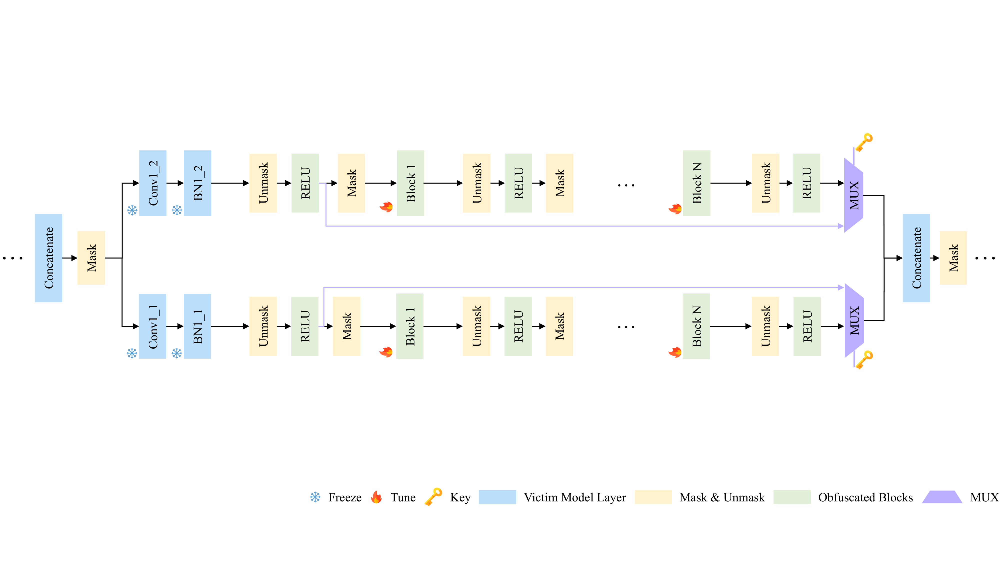
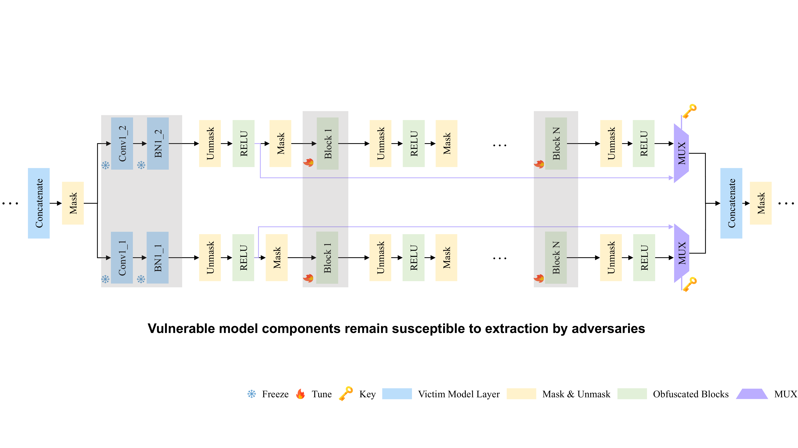
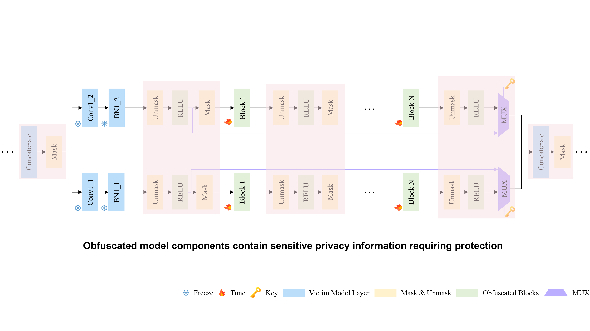
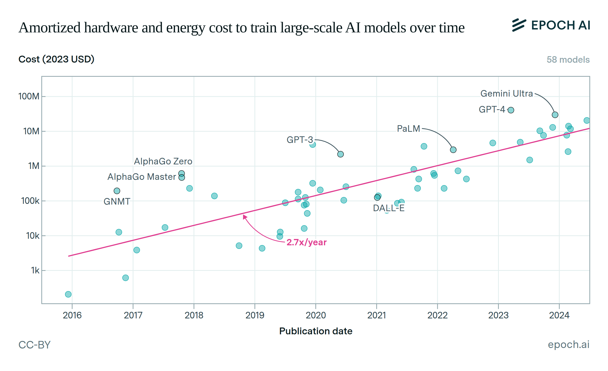
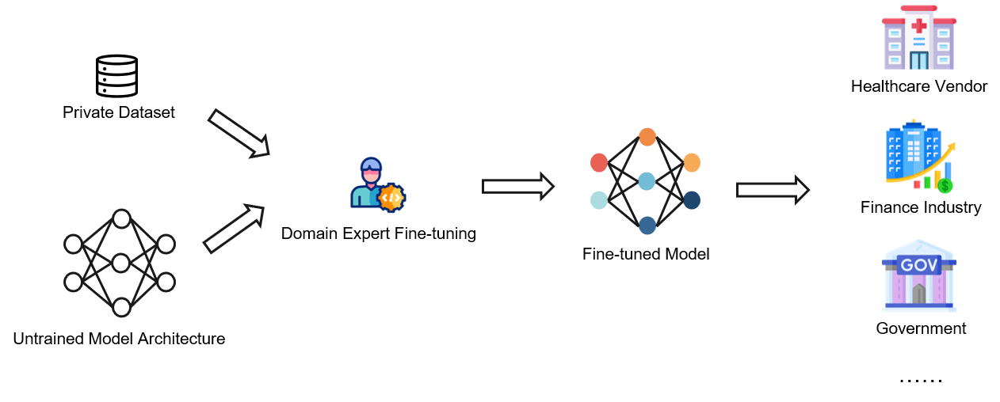
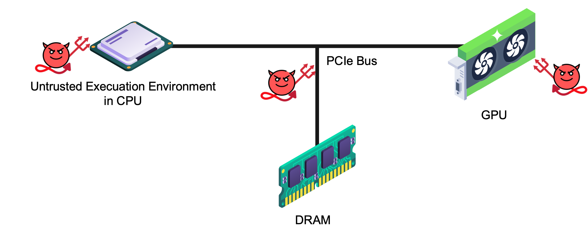
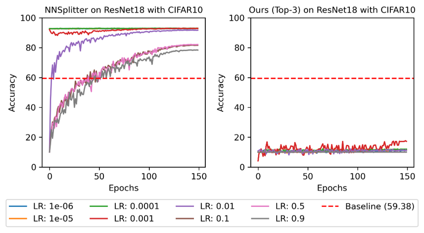

Method








Following the prior model privacy protection works, we consider a powerful adversary could access the untrusted execution environment, including the operating system (OS) and GPU. The adversary can observe and steal the model knowledge and data outside the TEE, but cannot access the ones inside the TEE. In line with industry practices and previous research, we assume that the deployed DNN models provide only class labels as output to both adversaries and authorized users. Any intermediate results, such as prediction confidence scores, remain protected within the TEE. We assume the adversary can query the victim model with limited numbers to build a transfer dataset, which can be used to train a surrogate model for model stealing attack. Furthermore, we assume the adversary can obtain at most 10% original training dataset for fine-tuning attack, which is a more powerful assumption based on prior works.








@inproceedings{bai2025phantom,
title={Phantom: Privacy-Preserving Deep Neural Network Model Obfuscation in Heterogeneous TEE and GPU System},
author={Bai, Juyang and Chowdhuryy, Md Hafizul Islam and Li, Jingtao and Yao, Fan and Chakrabarti, Chaitali and Fan, Deliang},
year={2025},
organization={34th USENIX Security Symposium}
}